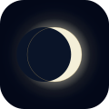

月 を 想 う 、 女 性 の た め の
ツ キ ヨ ガ
↓
下 に 引 い て 更 新
月 を 想 う 、 女 性 の た め の
ツ キ ヨ ガ
Schumann Resonance
—.—
Hz
指 で 回 転 ・ ピ ン チ で ズ ー ム
↑
北 向 き
↓
南 向 き
月 は い ま
—
—
月 齢
—
期 間
—
高 度
—
—
×
メ モ
港 を 選 ぶ
×
干 満 時 刻 は 選 ん だ 港 の も の に 切 り 替 わ り ま す
（ こ の 日 だ け ）
❀ 内 な る ツ キ ❀
×
あ な た が 、 一 番 美 し く な る
5 日 間
。
先 月 の 生 理 開 始 日 を 入 力
ス マ ホ で ツ キ 探 し
ス マ ホ で ツ キ を 探 す
セ ン サ ー を 許 可 し ま す か ？
常 時
次 回 は 確 認 し な い
ア プ リ 使 用 時
毎 回 確 認
コ ン パ ス を 合 わ せ る
ス マ ホ で
∞
を 描 い て く だ さ い
北
30
60
東
120
150
南
210
240
西
300
330
—
°
—
▼
方 位 を 合 わ せ た
月 の 方 位 · 高 度
—
現 在 地 を 取 得
↺
— —
— — —
—
—
MOON AGE
—
—
—
0
3
—
次 は 『
—
』
—
—
旧暦
--
--
両手の開き
--
°
☀
ヒルマツリ
昼祭り
--
南向きに立つ
右手
太陽
--
左手
月
--
☾
ヨルマツリ
夜祀り
--
北向きに座る
右手
月
--
左手
太陽
--
▼ 詳しく見る
--
（
--
）
--
‹
—
›
✦
暦
calendar
⊙
月 ナ ビ
navigate
◐
宙
SORA

ツ キ ヨ ガ
ホ ー ム 画 面 へ
あ と で
追 加